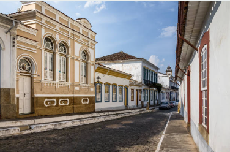
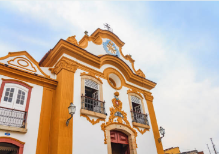
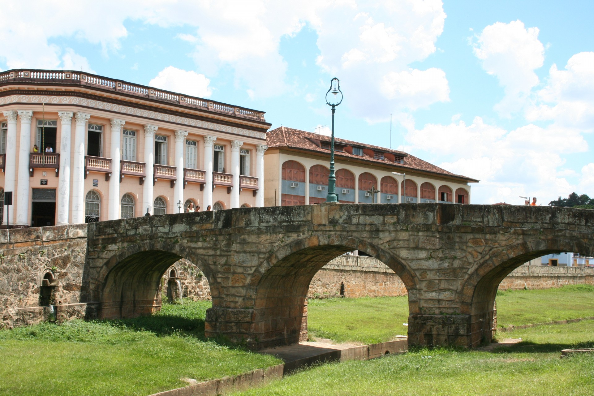
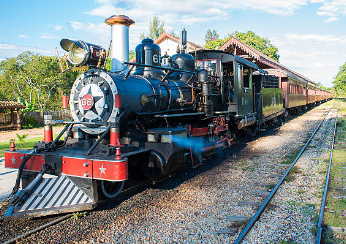

Início
search
Nossa São João del-Rei

Ruas de São João

Igreja Antiga
Igreja de São Francisco

Ponte da Cadeia

Maria Fumaça
Ruas de São João
Igreja Antiga
Igreja de São Francisco
Ponte da Cadeia
Maria Fumaça